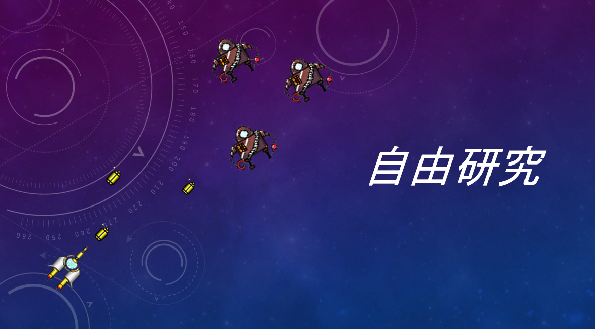
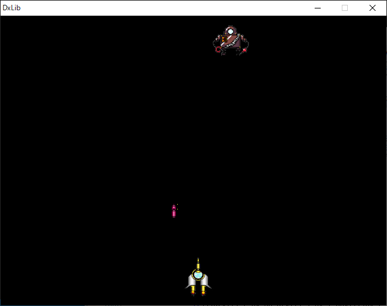

自由研究
私がした自由研究は、シューティングゲームを作ることです。
最終的にどちらがやられても数秒後には復活し、プログラムを終了するまで永遠に続くシューティングゲームとなりました。
ですが、キャラメイクやコーディング等頑張ったので、もしよろしければ一度プレイしてみてください。
（一人クオリティなのでこれが限度でした…）
下の画像をクリックするとzipファイルがダウンロードされます。
そして、「stg.zip」→「stg」→「stg5.cpp」の順にダブルクリックで立ち上げ、デバッグ→デバッグ開始を押すことで、プレイが可能となります。
↓実際の画面
操作方法
十字キー → 上下左右に移動 スペースキー → 弾を撃つ
